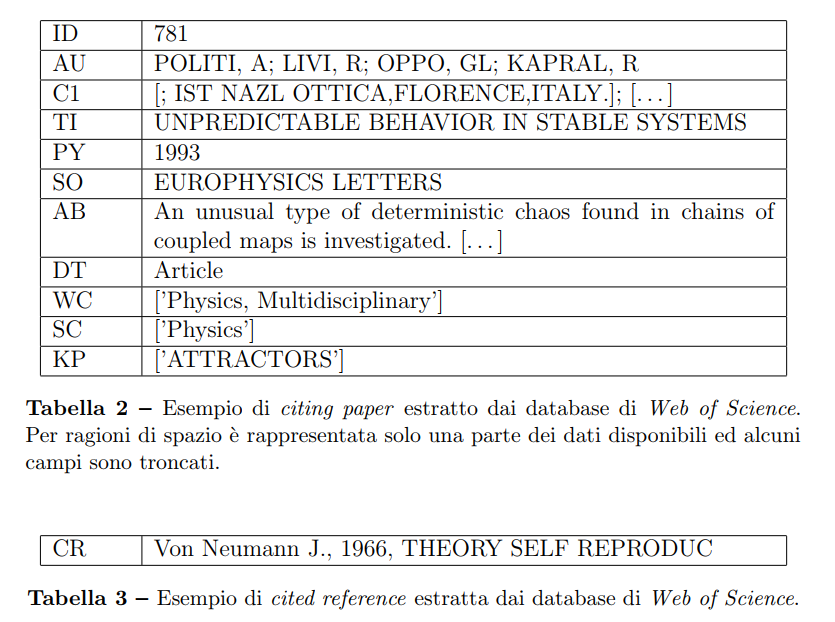
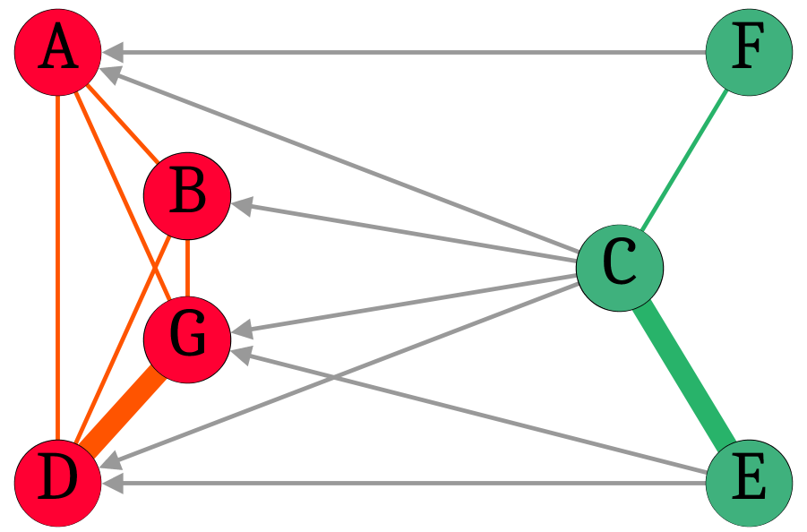
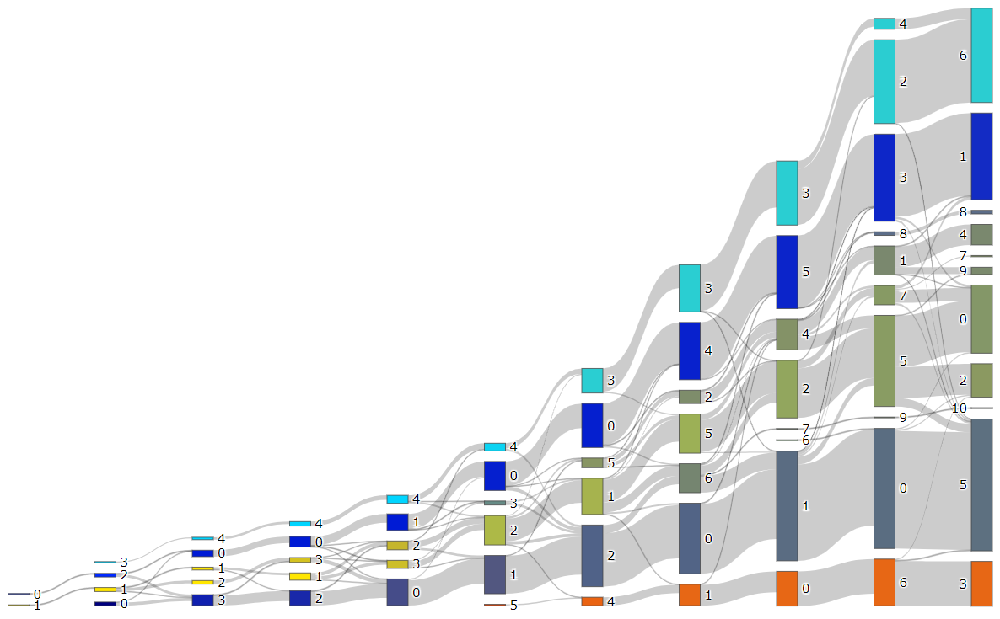
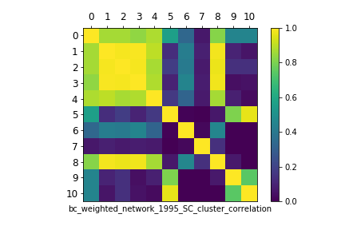
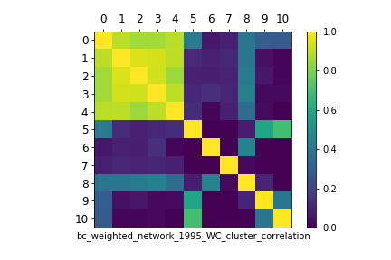
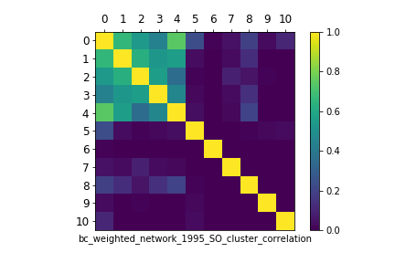
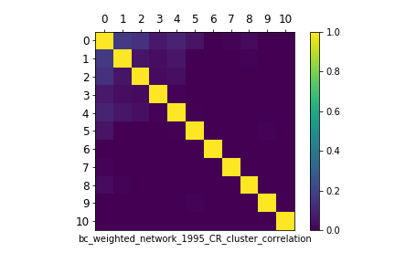
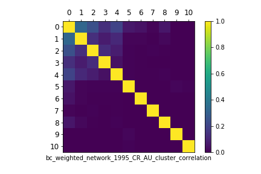

Cellular Automata
Linee guida per uno studio bibliometrico
Carlo Debernardi
Oggetto della ricerca: automi cellulari
- sistemi dinamici discreti
- ideati da von Neumann (fine anni '40)
- diffusione multidisciplinare
- utilizzati per simulazioni computazionali
Framework teorico: comunità di ricerca
- storia e sociologia della scienza
- terminologia dai confini sfumati (research specialty, invisible college, ...)
" [...] a research specialty is a self-organized network of researchers who tend to study the same research topics, attend the same conferences, read and cite each other’s research papers and publish in the same research journals"
Morris e Veer Martens (2009)
Tecniche e metodi: bibliometria
- citazioni come "moneta corrente"
- tracciamento della comunicazione formale (pubblicazioni)
- a partire da Garfield (metà anni '50)
- database bibliometrici (es. Web of Science)
- limiti e ambito di applicazione
Utilità della bibliometria descrittiva
- fotografia dello stato dell'arte di un ambito di ricerca
- individuazione di pubblicazioni particolarmente rilevanti
- analisi della rete sociale di persone ed istituzioni
- approfondimento storico ed eredità contemporanea
"Citazioni"
- citing paper (presenti nel database considerato, informazioni disponibili)
- cited reference (poche informazioni disponibili, non abbiamo dati citazionali)
- quotation (citazioni testuali, non considerate in quest'analisi)
Relazioni citazionali
- citation network (dati incompleti, matrice sparsa)
- bibliographic coupling
(statico, basta bibliografia, citing papers)
- co-citation
(dinamica, dipende dal database, cited references)
- altre relazioni di co-occorrenza (co-authorship, author co-citation, ecc)
Citing paper vs cited reference

Relazioni citazionali

cited references (co-citation) ← citations ← citing papers (bibliographic coupling)
Query al database
"cellular automat*"
"automata theory"
"tessellation automat*"
"tessellation structure"
"iterative array"
Circa 2.000 citing papers nel periodo 1985-1995,
circa 40.000 riferimenti bibliografici
Pulizia dei dati con CRExplorer
Esempio di analisi
- costruzione della matrice di adiacenza
(cp sulle righe, cr sulle colonne)
- passaggio alla matrice del bibliographic coupling
(prodotto riga-per-colonna della matrice con sé stessa, rimangono solo i cp)
- algoritmo di clustering
(massimizzazione della modularità)
- analisi della composizione dei cluster
(lavoro umano importante per interpretazione, work in progress)
Visualizzare le relazioni
diacroniche tra i cluster

Composizione disciplinare dei cluster
tramite etichette di Web of Science
Somiglianza tra i cluster
sulla base del parametro SC

Ottenuta tramite cosine similarity
Somiglianza tra i cluster
sulla base del parametro WC

Riviste di pubblicazione per cluster
Somiglianza tra i cluster
sulla base del parametro SO

Letteratura ed autori
di riferimento per cluster
Somiglianza tra i cluster
sulla base del parametro CR

Somiglianza tra i cluster
sulla base del parametro CR_AU

Analisi dei titoli per cluster
Prossimamente:
Analisi a grana più fine tramite pointwise mutual information per individuare i bigrammi più rilevanti
Grazie per l'attenzione
Carlo Debernardi
carlo.debernardi.w@gmail.com